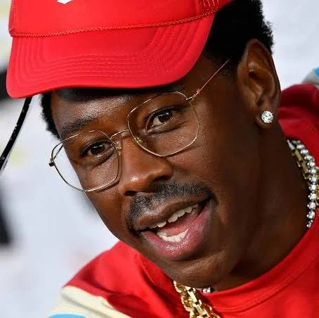
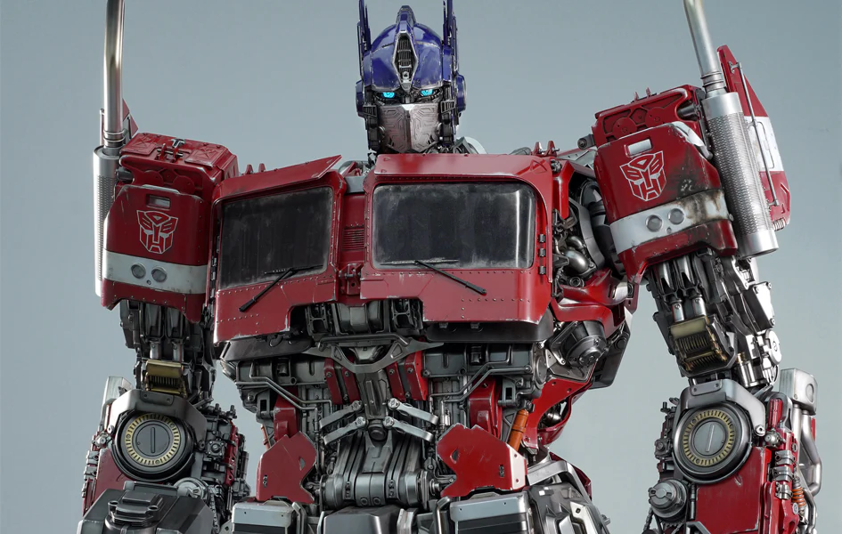

Your Satisfaction
Our Priority
What do you waiting for? Let the result approve your doubt
Contact me!Our Happy Clients
See their happy stories after working with us
Contact me!
TYLER
Tyler Gregory Okonma, professionally known as Tyler, The Creator, is an American rapper, record producer, and creative visionary from Los Angeles, California. He first rose to prominence in the late 2000s as the leader and co-founder of the influential alternative hip-hop collective Odd Future. Over the course of his solo career, his musical style evolved from raw, aggressive underground rap to a genre-bending blend of jazz, soul, R&B, and hip-hop. Known for his immersive album eras and distinct aesthetic, he has earned critical acclaim and multiple Grammy Awards for acclaimed projects like IGOR and Call Me If You Get Lost. Beyond music, he is a major force in fashion and culture through his clothing brands, Golf Wang and Golf le Fleur, as well as his annual Camp Flog Gnaw Carnival music festival.
CEO Building One
Optimus Prime
Optimus Prime is the iconic, noble leader of the Autobots, a faction of heroic, transforming alien robots from the planet Cybertron. Known for his unwavering moral compass and deep sense of honor, he fights tirelessly to protect both his homeworld and Earth from the villainous Decepticons. Before becoming the supreme commander of the Autobots, he was originally a humble civilian named Orion Pax until he was chosen to bear the mystical Matrix of Leadership. Standing as a symbol of hope and courage, Optimus is famous for his red and blue armor and his ability to transform into a heavy-duty semi-truck. Across decades of cartoons, comics, and blockbuster films, he is defined by his famous belief that "freedom is the right of all sentient beings.
CEO Building Two
CR7
Cristiano Ronaldo dos Santos Aveiro, widely known as CR7, is a Portuguese professional footballer considered one of the greatest players in the history of the sport. Renowned for his exceptional athleticism, goal-scoring prowess, and relentless work ethic, he has won five Ballon d'Or awards and numerous league titles across England, Spain, and Italy. He achieved legendary status during his iconic tenures at Manchester United and Real Madrid, where he became the all-time leading goalscorer in UEFA Champions League history. On the international stage, Ronaldo captained Portugal to victory at the 2016 UEFA European Championship and holds the record as the highest-scoring male international player of all time. Off the pitch, CR7 is a global cultural icon, entrepreneur, and one of the most followed and marketable athletes in world history.
CEO Building Three